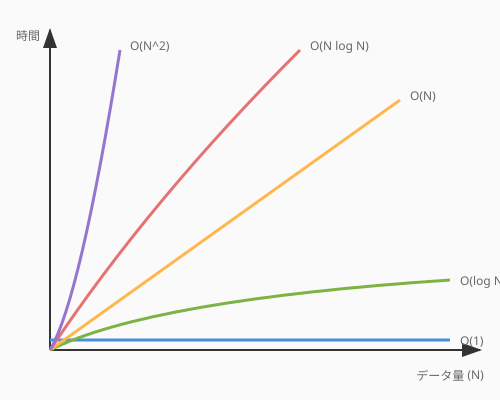
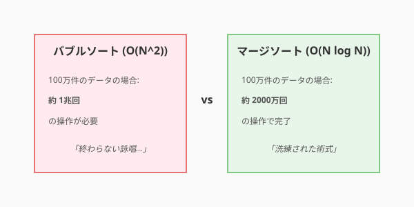
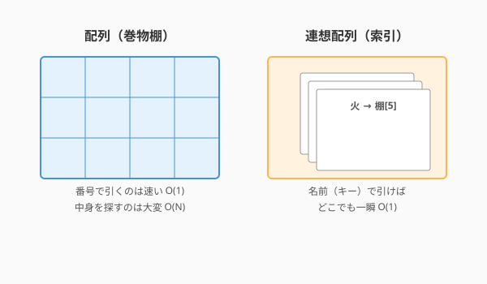

あなたが第2章で設計した「城（アーキテクチャ）」は、壮大で美しいものでした。しかし、その城を構成するレンガの一つひとつが脆ければ、城はやがて崩壊してしまいます。
ソフトウェアという魔法の世界において、レンガに相当する最小の構成単位——それが「アルゴリズム」と「データ構造」です。
「AIがあれば、アルゴリズムなんて知らなくてもコードは書ける」と思うかもしれません。確かに、AIはソート（並べ替え）や検索のコードを瞬時に生成してくれます。しかし、生成されたコードが「なぜそのデータ構造を選んだのか」「その魔法を使うのにどれだけの魔力（計算資源）を消費するのか」を判断することが、あなたが真のアルケミスト（錬金術師）になる道なのです。
このセクションでは、魔法の原子であるアルゴリズムとデータ構造の基礎を学び、AIの出力を正しく評価し、最適化するための「目」を養います。
アルゴリズムとデータ構造を理解することは、少ない魔力で素早く魔法を発動することに繋がります。
魔法を発動する際、どれだけの時間やメモリが必要かを評価する指標が「計算量」です。一般に O（オーダー）記法 を使って表します。 オーダーは、対象とするデータの大きさが増大するにあたり、時間やメモリなどのリソースがどのように増加するかを示します。

| 計算量 | 特徴 | 代表例 |
|---|---|---|
| O(1) | 常に一定。魔法の指を鳴らすだけで完了 | ハッシュマップの検索 |
| O(log N) | データが増えても時間はほぼ増えない。極めて優秀 | 二分探索 |
| O(N) | データの数に比例。素直で分かりやすい魔法 | 線形探索 |
| O(N log N) | 大規模データでも実用的。洗練された魔法 | マージソート、クイックソート |
| O(N^2) | データが2倍で時間は4倍。大規模データでは工夫が必要 | バブルソート、選択ソート |
「並べ替え（ソート）」は、アルゴリズムの威力を最も実感できる題材です。同じ「並べ替える」という目的でも、アルゴリズムの選択によって効率が劇的に変わります。
洗練されたソートアルゴリズム（O(N log N)）:
シンプルなソートアルゴリズム（O(N^2)）:

「速いアルゴリズムがわかっているならば、それを常に選べばいい」と思うかもしれませんが、魔法には魔力（メモリ）も必要です。時間計算量だけでなく、空間計算量（必要なメモリ量）も考慮する必要があります。 さきほどの表に空間計算量を加えてみましょう。
| アルゴリズム | 時間計算量 | 空間計算量 | 特徴 |
|---|---|---|---|
| マージソート | O(N log N) | O(N) | 高速だが、元データと同じサイズの作業領域が必要 |
| クイックソート | O(N log N) | O(log N) | 元の配列上で並べ替え（インプレース）、メモリに優しい |
| バブルソート | O(N^2) | O(1) | 遅いが、追加メモリはほぼ不要 |
具体例: 1GBのデータをソートする場合
組み込みシステムやモバイルアプリなど、メモリが貴重な環境では「少し遅くてもメモリを節約するアルゴリズム」が選ばれることもあります。トレードオフを理解し、状況に応じて最適な選択をすること——これがアルケミストの腕の見せどころです。
この視点があれば、AIが提案したアルゴリズムに対して「メモリ使用量を抑えた別の方法はある？」と問いかけることもできます。
データをどのように保持するかによって、その後の処理効率が劇的に変わります。

基本の4つ:
| データ構造 | 特徴 | 得意なこと |
|---|---|---|
| 配列（Array） | 順番に並んだ巻物 | インデックスでの高速アクセス O(1) |
| 連想配列（Hash Map） | 魔法の索引 | キーによる瞬時の検索 O(1) |
| スタック（Stack） | 本の山（LIFO: 後入れ先出し） | 直前の状態に戻る操作（Undo機能など） |
| キュー（Queue） | 行列（FIFO: 先入れ先出し） | 順番待ちの処理（タスクキューなど） |
発展的なデータ構造:
QuestForgeでは、クエストの依存関係をグラフで、「やり直し機能」をスタックで、報酬の配布順をキューで表現できます。
QuestForgeにおいて、1万件のクエストから特定の「タグ」がついたものを探すシーンを考えてみましょう。
リストの先頭から一つずつ確認していく方法です。これを「線形探索」と呼びます。
# 従来の方法：リストを全走査する
def find_quests_by_tag_linear(quests, target_tag):
found_quests = []
for quest in quests:
if target_tag in quest.tags:
found_quests.append(quest)
return found_quests
# 計算量: O(N)
# クエストが100万件になれば、100万回のチェックが必要。あらかじめ検索用の「索引（ハッシュマップ）」を作っておく方法です。
# 最適化された方法：あらかじめタグをキーにした辞書を作っておく
class QuestStore:
def __init__(self, quests):
self.tag_index = {} # 魔法の索引 (ハッシュマップ)
for quest in quests:
for tag in quest.tags:
if tag not in self.tag_index:
self.tag_index[tag] = []
self.tag_index[tag].append(quest)
def find_by_tag(self, target_tag):
return self.tag_index.get(target_tag, [])
# 計算量: O(1)
# クエストがいくら増えても、一瞬で取り出せる。| 観点 | 従来のアプローチ（線形探索） | AI時代のアプローチ（索引利用） |
|---|---|---|
| 実行速度 | データ量に比例して遅くなる | 常に一定（極めて高速） |
| メモリ消費 | 少ない | 索引の分だけ多くなる |
| 実装コスト | 低い | やや高い（事前の準備が必要） |
| 推奨シーン | データが少ない、または一度きり | 頻繁に検索が発生する大規模システム |
[!TIP] コラム: 「クラス」と「関数」 プログラミングパラダイムによって、ロジックの呼び方や捉え方は異なります。オブジェクト指向では「クラス（のメソッド）」、関数型や手続き型プログラミングでは「関数」と呼ばれます。
これらは厳密には異なる概念ですが、「特定のデータ構造に対して、一定の手順（アルゴリズム）で処理を行う最小単位」という点では共通しています。本書では、アルゴリズムの元素を説明するにあたって、これらを概念的に類似したものとして捉えて進めます。
AIに「検索を速くして」と頼むと、多くの場合後者のような「インデックス（ハッシュマップ）を使った実装」を提案してくれます。この時、「なぜ辞書を使う必要があるのか」を理解していれば、自信を持ってその提案を採用できます。
Pythonの標準ライブラリを使って、10万件のダミーデータを生成してみましょう。
線形探索とハッシュマップによる探索で、どれくらい速度が違うかを計測します。
import time
import random
# ダミーデータ生成
num_quests = 100000
tags = ["Urgent", "Daily", "Legendary", "Gold", "XP"]
quests = [{"id": i, "tags": [random.choice(tags)]} for i in range(num_quests)]
# 1. 線形探索
start = time.perf_counter()
result_linear = [q for q in quests if "Legendary" in q["tags"]]
end = time.perf_counter()
print(f"Linear Search: {end - start:.6f} seconds")
# 2. ハッシュマップ（インデックス）
start = time.perf_counter()
# 索引の構築（本来は事前に行う）
index = {}
for q in quests:
for t in q["tags"]:
if t not in index: index[t] = []
index[t].append(q)
# 検索
result_hash = index.get("Legendary", [])
end = time.perf_counter()
print(f"Index Search: {end - start:.6f} seconds")実行結果を見て、数十倍から数百倍の速度差が出ることを確認してください。これが「アルゴリズムの魔力」です。
誤解: 「今のコンピュータは速いから、効率の悪いコードでも問題ない」
誤解: 「AIに『速くして』と言えば、常に最適なコードが出る」
bisect（二分探索）や heapq（優先度付きキュー）などの強力な標準モジュールがないか確認しましょう。次回は、これらの元素を組み合わせて複雑な魔法を組み立てる「制御構造」の美学について学びます。
本節で扱った概念には、それぞれ歴史的な原典があります。「誰が、いつ、どのような着想で生み出したのか」を知ることで、アルゴリズムへの理解がより深まります。
| 概念 | 原典 | 一言 |
|---|---|---|
| O記法 | Knuth, "Big Omicron and Big Omega and Big Theta," ACM SIGACT News, 1976 | O・Ω・Θの3記法を計算機科学に定着させた |
| マージソート | Knuth, "Von Neumann's First Computer Program," ACM Computing Surveys, 1970 | 史上最初のプログラム（1945年）がソートだった |
| クイックソート | Hoare, "Quicksort," The Computer Journal, 1962 | 実務で最も使われるソートの誕生 |
| ハッシュテーブル | Peterson, "Addressing for Random-Access Storage," IBM J. Res. Dev., 1957 | ハッシュの数学的分析の先駆け |
| グラフ探索 | Dijkstra, "A Note on Two Problems in Connexion with Graphs," Numerische Mathematik, 1959 | たった3ページで最短経路を解いた |
以下のPythonコードはリストを全走査して検索を行っています。
データ量が増えても高速に動作するように、適切なデータ構造（ハッシュマップなど）を使ってリファクタリングしてください。
また、リファクタリング前後の計算量（O記法）についても説明してください。
[対象のコードを貼り付け]QuestForgeのクエストツリー（依存関係）を表現するのに最適なデータ構造を提案してください。
特定のクエストが完了した際に、影響を受ける後続のクエストを効率よく抽出できる構造にしたいです。執筆メモ: